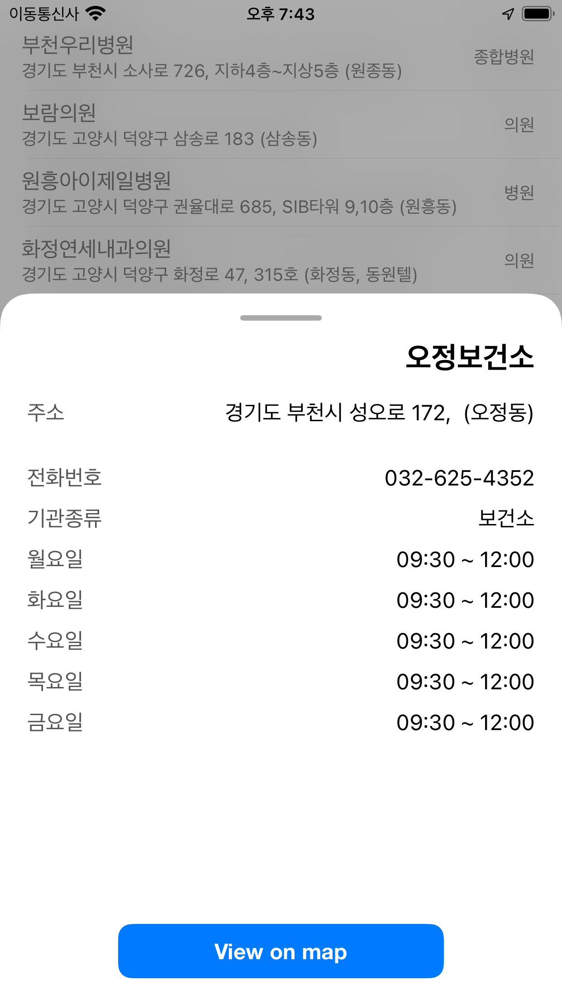

App support for 'Designated hospital in Korea'
App download:

Contact us:
If you contact us at kaudo@msn.com, we will respond sincerely.
When you start the app, it downloads information about designated hospitals, clinics, and counseling centers.
Data is newly downloaded every week.
On the map screen, three markers are displayed.
Blue is designated hospital, orange is clinic, and green is counseling center.
Select a marker to display its name and address.
In the '지정병원', '전담클리닉', and '전화상담' tabs, a list of each institution is displayed.
The name, address, and type are displayed.
You can search the list by entering a search term at the top.

If you select marker information on the map or select a company from the list, the detailed screen is displayed.
You can check the detailed information of the company.
You can display a business search page or make a call.
If you select 'View on map', the location is displayed on the map screen.